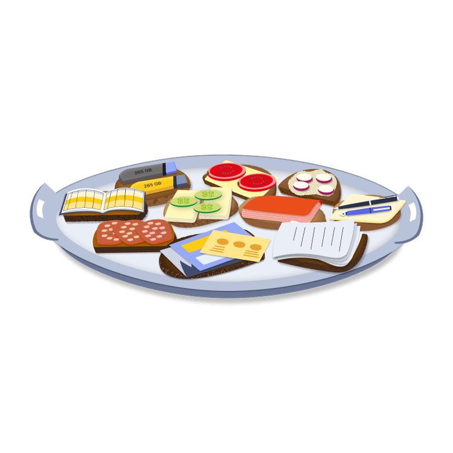

Mit der Academy erhaltet ihr im Business-Plan praxisnahe Lernmodule rund um Facilitation und wirksame Transformation.
Gemeinsam mit 9 Spaces zeigt Plan International Deutschland, wie wertebasiertes Arbeiten Orientierung gibt – nach innen wie nach außen.

Mit diesem Tool schafft ihr ein einfaches System, um Fachwissen und Erfahrungswerte zu teilen.
Dieses Tool hilft euch dabei, vorhandenes Wissen und Kompetenzen in eurem Team offenzulegen.
Bei dieser Variante des Daily Stand-ups macht ihr im Team euren jeweiligen aktuellen Arbeitsstand transparent und gebt euch gegenseitig Impulse für die nächsten Schritte.
Macht mit Badges unterschiedliche Skill-Level und Entwicklungspotentiale im Team sichtbar.